Префектура Гумма · Томиока · история
Склад коконов «Ниси-окимаю-сё»: как шёлковую фабрику Томиока открыли изнутри
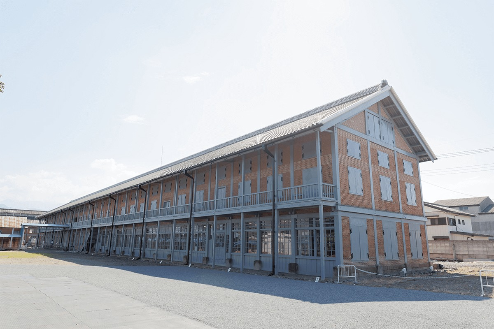
Шёлкопрядильная фабрика Томиока, построенная в 1872 году, входит в список всемирного наследия. В октябре 2020 года на её территории после долгой реставрации открылся склад коконов «Ниси-окимаю-сё», и с тех пор в старый кирпичный корпус можно зайти и подняться на второй этаж.
Здание
Склад, где хранили сырьё для шёлка
Фабрику в Томиоке построили в 1872 году, и на её территории три здания признаны национальным сокровищем Японии. Одно из них называется «Ниси-окимаю-сё», это западный склад коконов. Здесь хранили коконы, из которых потом разматывали шёлковую нить. Здание двухэтажное, на деревянном каркасе с кирпичными стенами, и вытянуто с севера на юг примерно на 104 метра.
Работы по сохранению склада шли около шести лет, и 3 октября 2020 года он открылся для посетителей. Внутри на первом этаже поставили стальной каркас для защиты от землетрясений и на нём, как на раме, собрали стеклянную комнату. Так появились многоцелевой зал, откуда через стекло видно устройство старого здания, и галерея с историческими материалами. Склад сохраняет статус национального сокровища, и при этом его активно используют.
Первый этаж
Стеклянный зал
В северной части первого этажа зал устроен по принципу «дом в доме». Стальной каркас, который держит здание при землетрясении, служит и рамой для комнаты со стенами и потолком из стекла. В таком зале проводят мероприятия, и всё это время вокруг видны кирпич, балки и столбы склада.
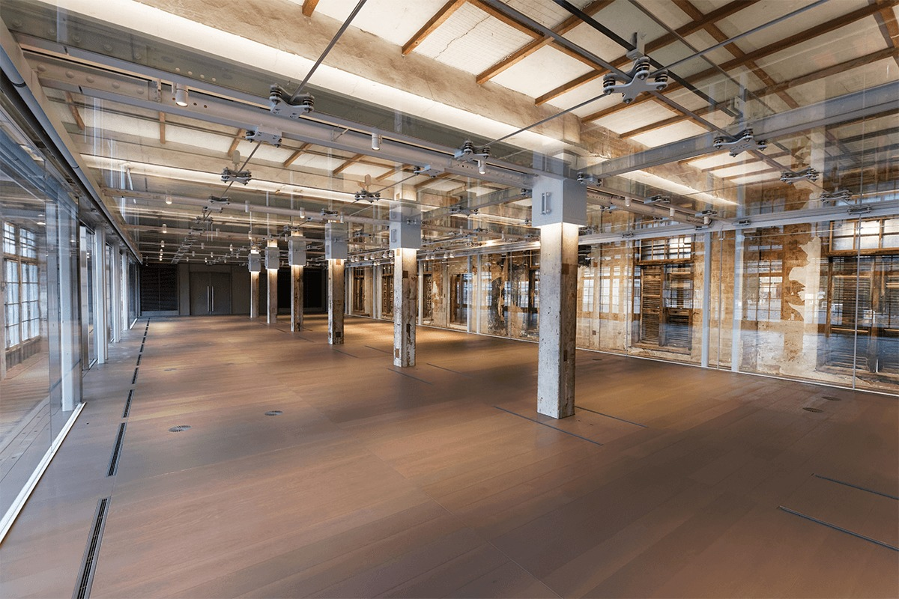
Само здание здесь тоже экспонат. Стены, потолок и столбы подсвечены светодиодами, а на стенах и дверях сохранились газеты, наклеенные в годы работы фабрики. Их тоже считают историческим материалом.
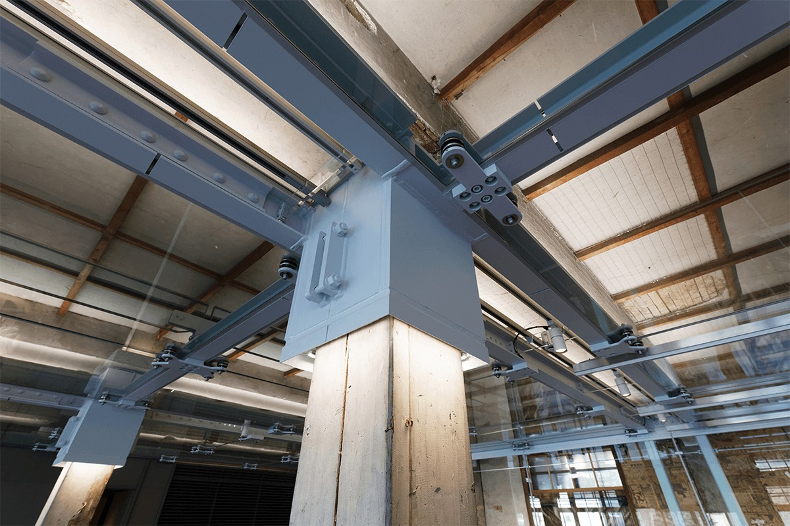
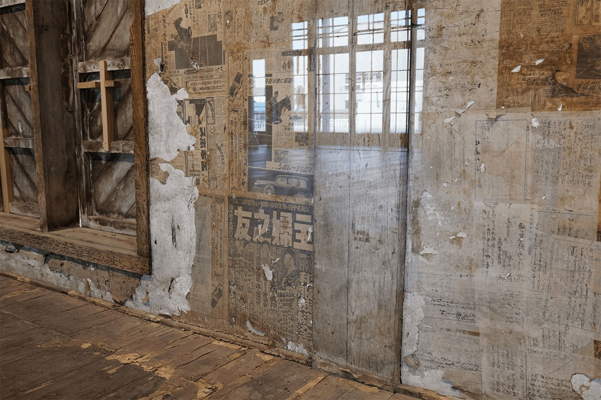
Галерея
Столы, униформа и путь от кокона к нити
На первом этаже устроена и галерея. Даже столы, на которых лежат экспонаты, когда-то стояли на этой фабрике.
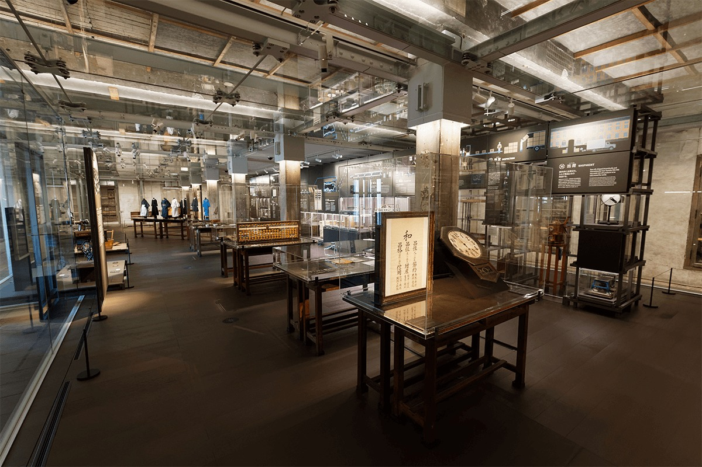
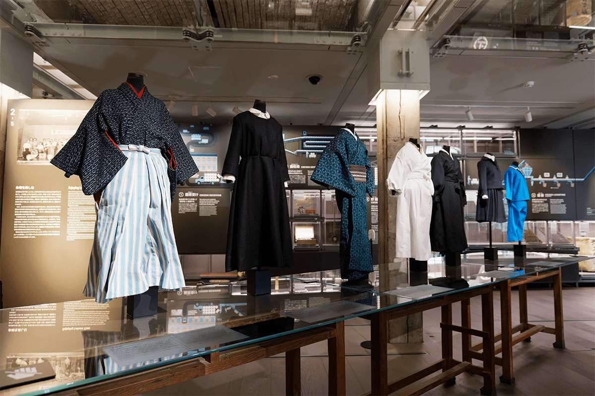
Одна из витрин показывает, как менялась рабочая форма за 115 лет, с основания фабрики до её закрытия. Другая часть галереи рассказывает, как из кокона получают сырой шёлк: процесс объяснён по шагам с рисунками.
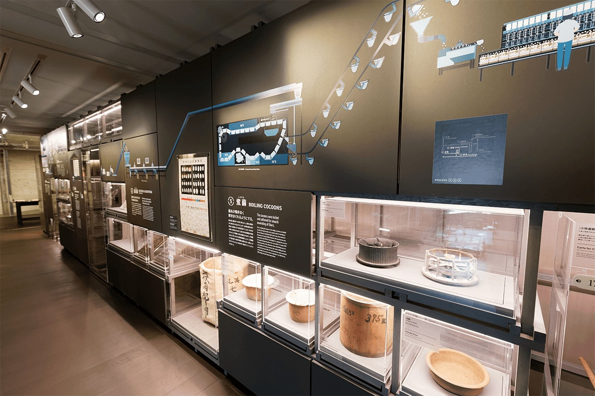
Второй этаж
Следы 115 лет
На втором этаже рассказывают о том, что выяснилось во время реставрации, и о том, как склад работал. Здесь воссоздано, как хранили коконы, и показано, как менялось назначение помещений.
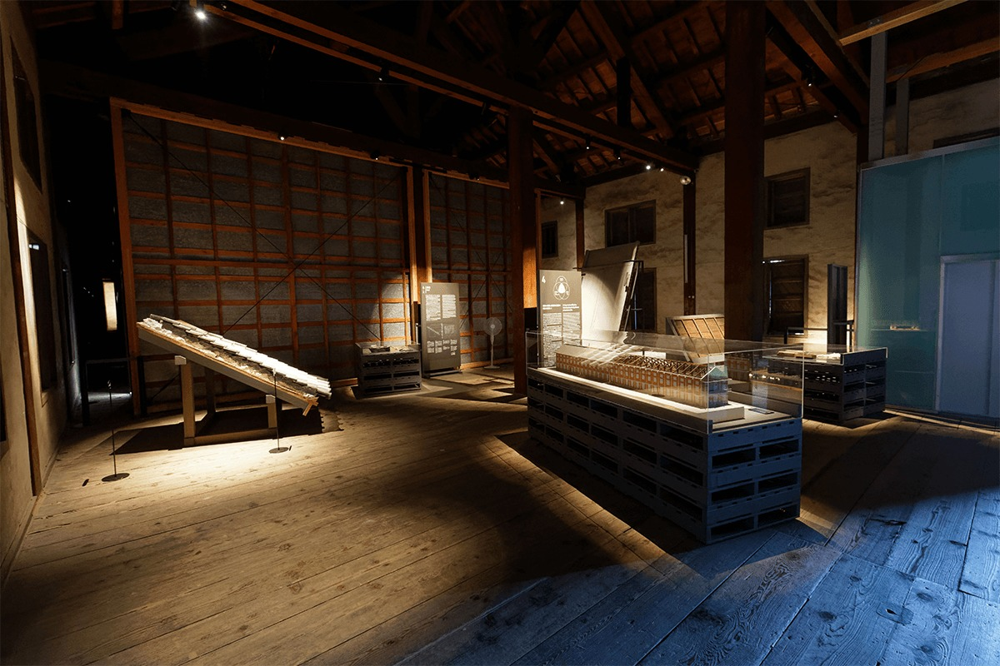
Главное на этом этаже: сами стены. Штукатурка и столбы за 115 лет работы фабрики покрылись надписями и пометками, и по ним можно читать историю склада.
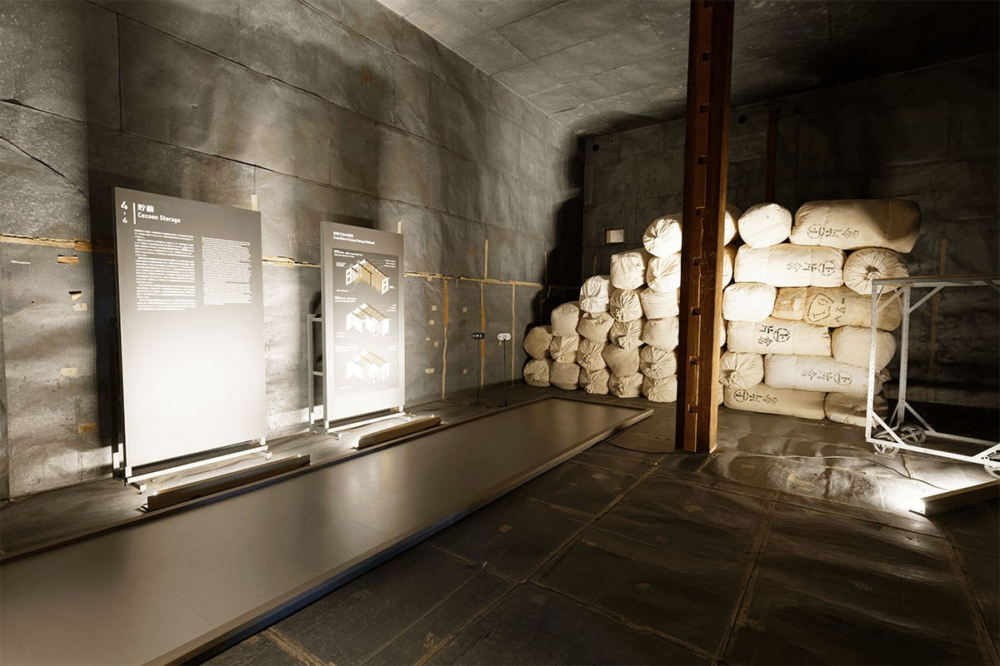
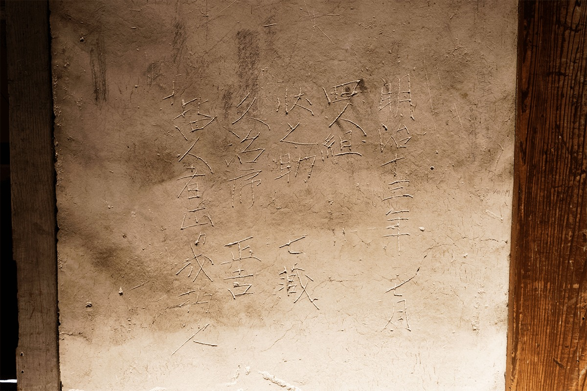
Фойе
Место для отдыха
В фойе можно посидеть и передохнуть. Вдоль стены стоит огромная панель с хронологией, по которой видно всю историю фабрики Томиока.
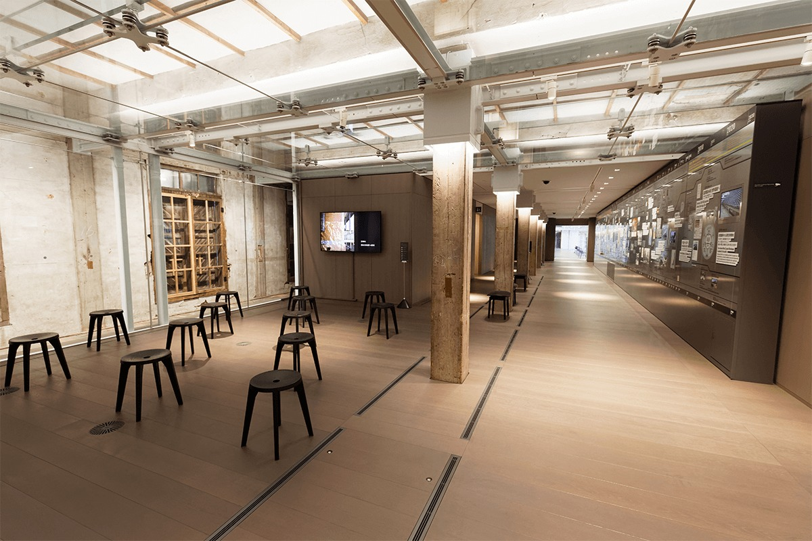
Аудиогид
Два голоса склада
В 2020 году для склада сделали аудиогид в бесплатном приложении для смартфона. Вариантов два. В основном варианте известный актёр озвучивания рассказывает об экспонатах и особенностях здания. Этот гид есть на английском, китайском, корейском и французском.
Второй вариант придумал исполнитель рокёку, старинного японского сказа под аккомпанемент сямисэна. Он сочинил собственное сказание по следам надписей на оштукатуренных стенах второго этажа и по кирпичной кладке. Сам сказ звучит только по-японски, но к нему есть пояснение на английском.
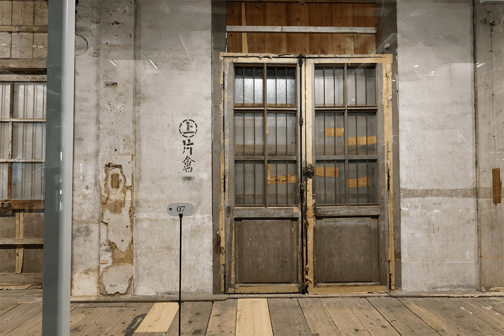
Шёлкопрядильная фабрика Томиока
- Адрес
- префектура Гумма, Томиока, Томиока, 1-1
- Телефон
- +81 274-67-0075
- Часы работы
- 09:00–17:00 (вход до 16:30)
- Выходные
- 29–31 декабря
- Сайт
- tomioka-silk.jp